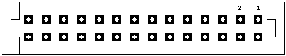

Previous
Next
TOC
Die Pinbelegung der ACSI/FDD-Schnittstelle des STBook
Pinbelegung des Platinenverbinders J600!
1 Ground
11 FD Request
21 Datenbit 6
2 720KB/1.44MB Select
12 FD Select
22 Datenbit 7
3 Reset
13 CR/W
23 Adressbit 1
4 HDint
14 Datenbit 0
24 Adressbit 2
5 FDint
15 +5V ÅEer 10KOhm
25 Acknowledge
6 Drive 1 Select
16 Datenbit 1
7 Drive 0 Select
17 Datenbit 2
8 Side 0 Select
18 Datenbit 3
9 HD Request
19 Datenbit 4
10 HD Chipselect
20 Datenbit 5
Die Pinbelegung des ACSI/FDD Steckers an der RÅEkseite!
Mikrostecker des STBook ACSI-Buchse Pin (19 pol.)
1 GND
11, 13, 15, 17
2 GND
11, 13, 15, 17
3 FDD Sense Sel
4 Reset
12
5 HDint
10
6 FDint
7 Drive 1 Select
8 Drive 0 Select
9 Side 0 Select
10 HD Request
19
11 HD Chipselect
9
12 FD Request
13 FD Select
14 CR/W
18
15 AVLTG
16 AVLTG
17 ACK
14
18 CA2
19 CA1
16
20 Datenbit 7
8
21 Datenbit 6
7
22 Datenbit 5
6
23 Datenbit 4
5
24 Datenbit 3
4
25 Datenbit 2
3
26 Datenbit 1
2
27 Datenbit 0
1
28 HOST ON
Die Pinbelegung des Mikrosteckers f‰ngt oben rechts mit 1 an und
geht nach links, wenn man auf die RÅEkseite des STBook sieht!

Kapitel Die ACSI/FDD-Buchse des STBook, Seite 1